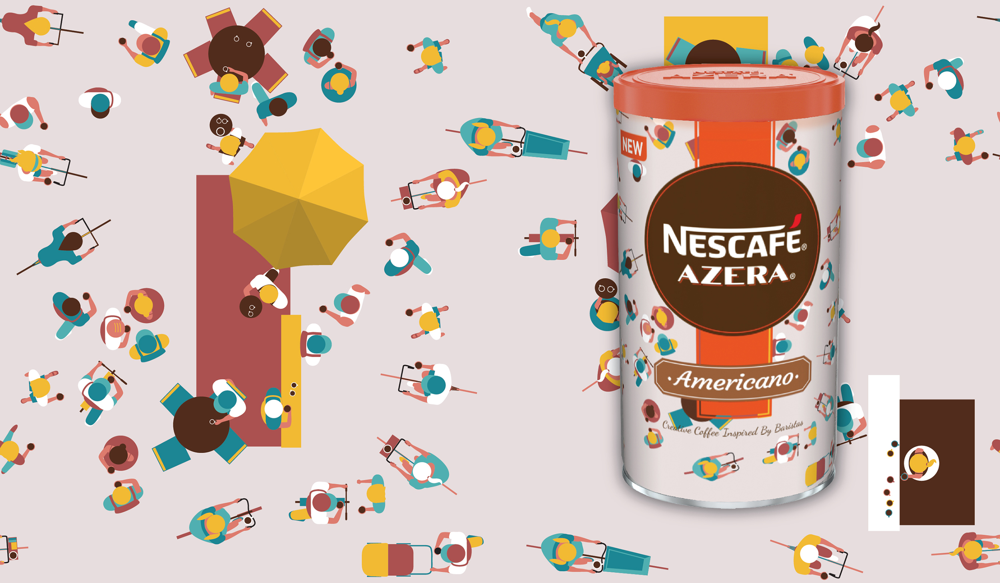
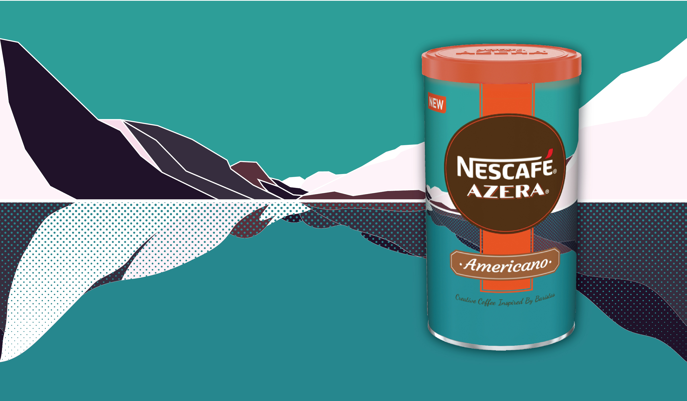
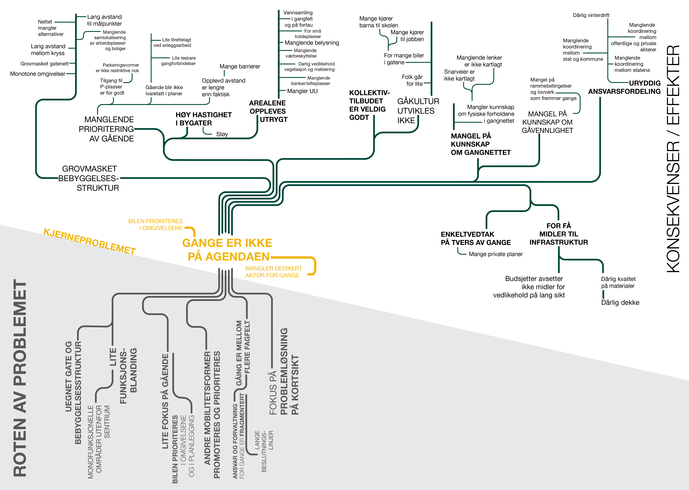

Nescafe Azera tin with illustration applied. Nescafe Azera tin with illustration applied. Nescafe Azera tin with illustration applied. Nescafe Azera tin with illustration applied. Nescafe Azera tin with illustration applied. Nescafe Azera tin with illustration applied. Nescafe Azera tin with illustration applied. Nescafe Azera tin with illustration applied. Nescafe Azera tin with illustration applied. Nescafe Azera tin with illustration applied. Nescafe Azera tin with illustration applied.

Unwrapped tin with the illustration and brand design applied

The second entry to the competition, not chosen by the jury.

Percentage of daily trips by transport mode.
Different colour pallettes were explored before the client went for the greens.
Persentage of trips lasting for 5, 10, 20, 30 minutes and more. For the entire city (to the left) and each part of the city separately.


General Theory of Walkabilitys’ conditions for increasing walkability:
simple, useful, safe, comfortable and interesting - blossoming into the benefits of increased walkability to the society - social, environmental, health and economic benefits.
The main issue identified by using problemtree technique - walking is not on the political agenda.
The identified core problem in the middle, which should be addressed in order to solve the root problems.
